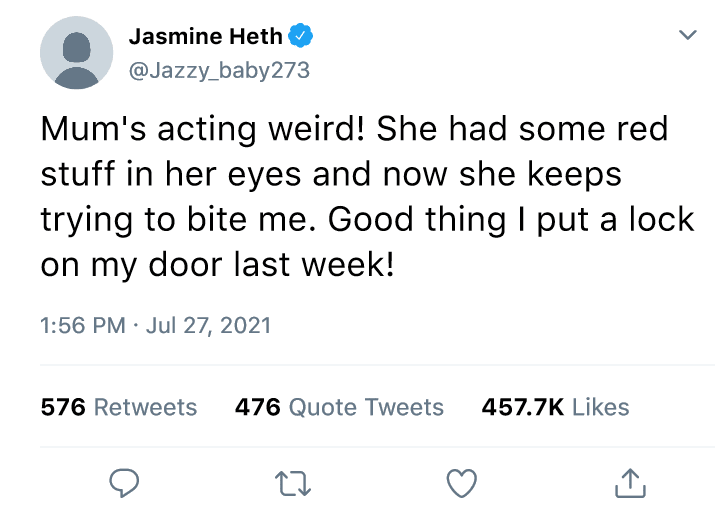

THE MOVIES WERE RIGHT, THE APOCALYPSE HAS FINALLY COME!
The Survival Guild is dedicated to showing you everything you need to know to survive the apocalypse. See below for world news, or check out our survival tips and how to guide to defending against The Infected.
By Rebecca Rayner | Last Updated: 31 August 2021, 14:06

THE STATE OF THE WORLD
On July 3rd 2021, the first case of a mutated strain of COVID-19 was discovered in Southern Thailand. It was found that when the virus came into contact with a fungus nicknamed the “zombie ant fungus” (Opiocordyceps unilateralis) it mutated into a new virus, named O-COVID-21.
Symptoms of O-COVID-21 in Stage 1 include coughing, fever, hallucination, and rashes around the torso.
Stage 2 symptoms include loss of balance, vomiting, loss of taste, nerve death which causes increased pain threshold, and sensitivity to light.
Stage 3 symptoms include increased levels of aggression, bleeding from the eyes and ears, loss of higher brain functions, insatiable appetite, increased muscle mass, hydrophobia and heliophobia. Beyond this stage, there are three known variations of infected individuals.
Shortly after its discovery, the new mutation has spread to most countries across the world, causing widespread panic and hysteria. The virus appears to be fatal to the very young, very old or those with suppressed immune systems. Currently, all countries have shut their borders in an attempt to contain the virus.
Ireland is among the few remaining infection-free zones. The coast guard patrols the waters surrounding Ireland regularly, preventing all ships from landing.
Live News Feed

Last updated: 31 August 2021, 13:23
Scientists have discovered a third varient of the O-COVID-21 virus, causing those infected to become disfigured with fungus goring up and over the eyes. This varient behaves in a similar manner to a queen in a beehive, directing the workers and drones. See more...
Last updated: 22 August 2021, 13:37
Russia and USA have joined forces to fight back the attacking hordes of Infected. Talks are underway to send nuclear missiles into the worst affected areas. The Chinese government has not been in contact for three days, people are beginning to fear the worst. See more...

Last updated: 02 August 2021, 13:02
Governments are in turmoil as the virus continues to spread. All countries have shut their borders in an effort to contain the virus. Increased levels of aggression and violence seen in infected cases. Hospitals are severely understaffed across the world. See more...

Last updated: 29 July 2021, 13:41
Scientists have discovered a mutation of the virus nCOVID-19 in Southern Thailand, now named O-COVID-21. Those infected by O-COVID-21 have increased levels of aggression and violence. More than 50,000 cases have been reported in Russia and China. See more...
Last updated: 4 July 2021, 09:26
A new pandemic has been found in Thailand, already affecting over 10 million people. It is believed this new virus is related to the delta strain of COVID-19, causing more severe symptoms than all current COVID strains. This new virus is fatal to the very young and very old... See more...
Twitter Feed
